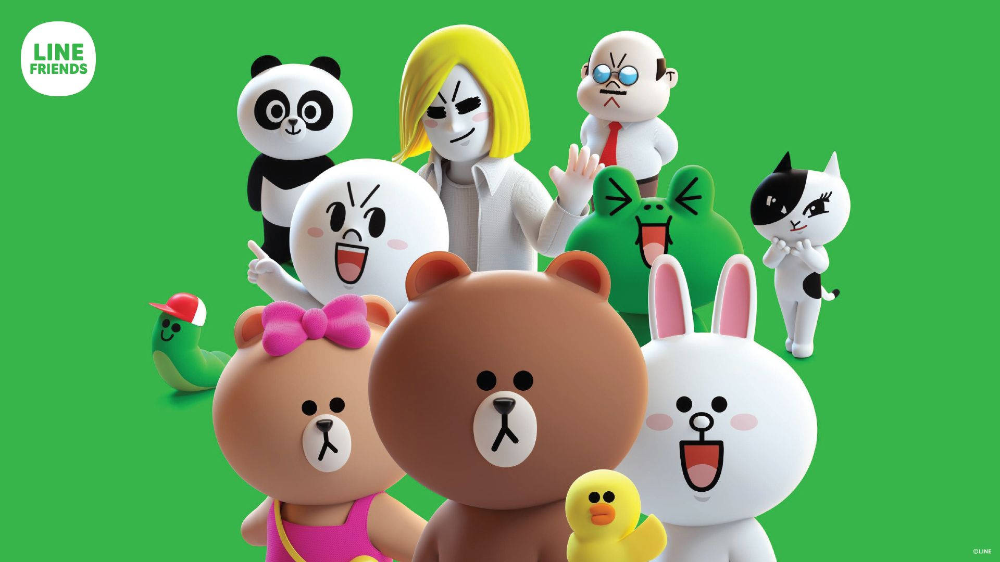
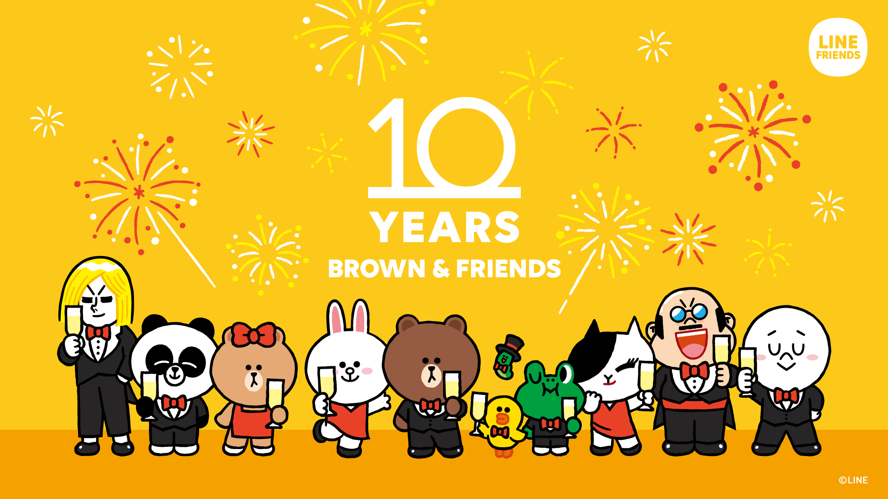

WHAT IS LINE FRIENDS?
Line Friends is a group of cartoon characters created by Line Corporation in South Korea. Initially, the characters were created for use as stickers in the Line messaging app, but they quickly gained global popularity and expanded into various merchandise and stores.
Released in 2015, the characters are used in various products, animations, games, cafes, hotels and theme parks. In addition to its online presence, physical stores featuring Line Friends have opened in cities around the world. The brand has currently managed by its subsidiary Line Friends Corporation since 2015.

